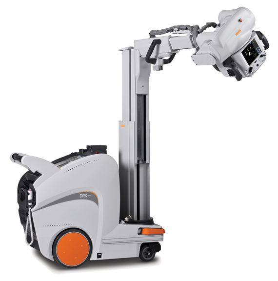

Drx revolution

DESCRIPCIÓN:
El sistema móvil de rayos X directo CARESTREAM DRX REVOLUTION le permite llevar las capacidades clave de una sala de radiología directamente hasta donde se encuentra el paciente, ya sea la cama, el quirófano, la sala de cuidados intensivos o la unidad de emergencia.
CARACTERÍSTICAS:
Generador de rayos X
Salida de energía máxima: 32 kW.
Rango de kVp: 40 a 150 kVp.
Rango mAs: 0.1 a 320 mAs.
Tubo de rayos X
Tamaño de punto focal: 0.6 mm/1.2 mm.
Ángulo objetivo: 14 grados.
Capacidad térmica del ánodo: 300 kHU (212 kJ).
Movimiento del cabezal de tubo
SID máxima al suelo: 2,022 mm (79.6 pulg.).
SID mínima al suelo: 683 mm (26.9 pulg.).
Alcance del brazo del tubo: 1,351 mm (53.2 pulg.) (centro del carril al eje del haz de rayos X).
Intervalo de giro de la columna: +/- 270 grados.
Giro del tubo: +180 grados hacia la derecha/-135 grados en sentido contrario a las manecillas del reloj.
Inclinación del tubo: -10 a +90 grados.
Intervalo de giro de la columna: +/- 90 grados.
Características físicas
Peso: 575 Kg (1,268 lbs).
Altura (columna replegada): 1,295 mm (51.0 pulg.).
Altura (columna extendida): 1,956 mm (77.0 pulg.).
Ancho: 576 mm (22.7 pulg.).
Longitud: 1,219 mm (48.0 pulg.).
Interfaz de usuario
Principal: Pantalla táctil de 19 pulg.
Secundaria (cabezal del tubo): Pantalla táctil de 8 pulg.
DATOS COMPLEMENTARIOS: Si desea obtener más información sobre los DETECTORES DRX, favor de contactar al representante CARESTREAM de su localidad o a:
CARESTREAM
Teléfono: (33) 3134-6200
o bien, visítenos en: www.carestream.com.mx